Project pathway
Do the real design work.
Each activity has a clear goal, source visual, ordered steps and autosaving evidence. Complete the stages your teacher directs.
Activity 1Textiles and purpose investigation
Your goal
Recognise textiles as designed materials and define a respectful purpose for the hat.
- List textile products from several contexts.
- Study the hat-purpose gallery.
- Choose a possible user and cause within teacher guidance.
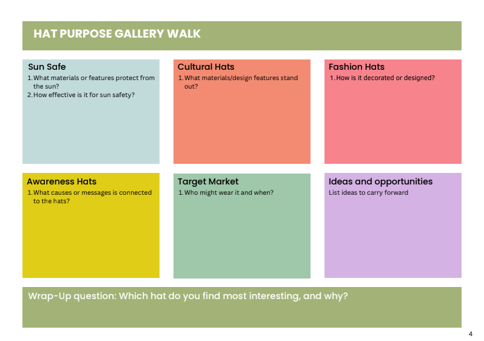
Save as evidence: contexts list, user/cause statement and respectful-use boundary.
Activity 2Safety and tools audit
Your goal
Explain the controls that make textile practical work safe.
- Read the workstation image.
- Identify five hazards and controls relevant to your room.
- Justify four tools by function and safe use.
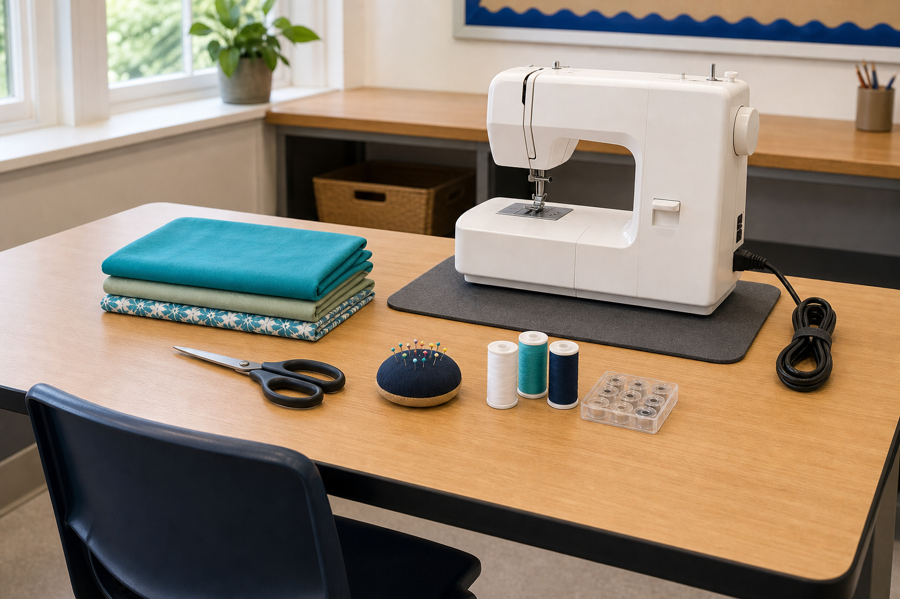
Save as evidence: hazard controls, tool justifications and stop-work triggers.
Activity 3Visual message studio
Your goal
Turn a researched message into an original colour-and-symbol direction.
- Complete See–Think–Wonder.
- Analyse one campaign without copying it.
- Propose an original colour palette and symbol.
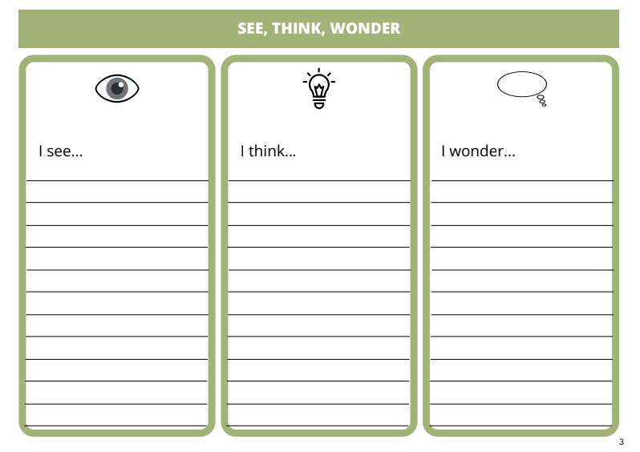
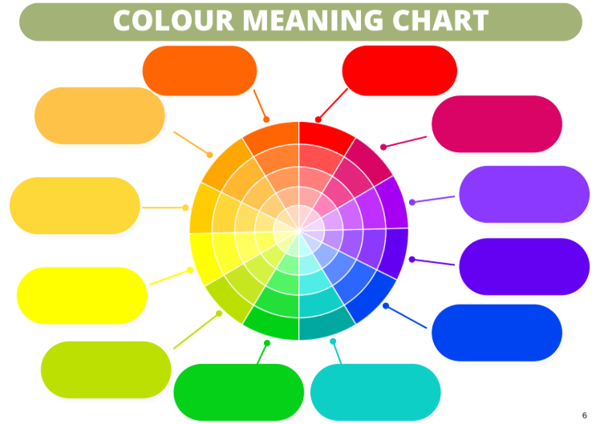
Save as evidence: visual analysis and original message direction.
Activity 4Brief and criteria builder
Your goal
Define the context, user and need, then write a useful brief and testable criteria.
- Frame the situation.
- Write the design brief.
- Separate criteria from real constraints.
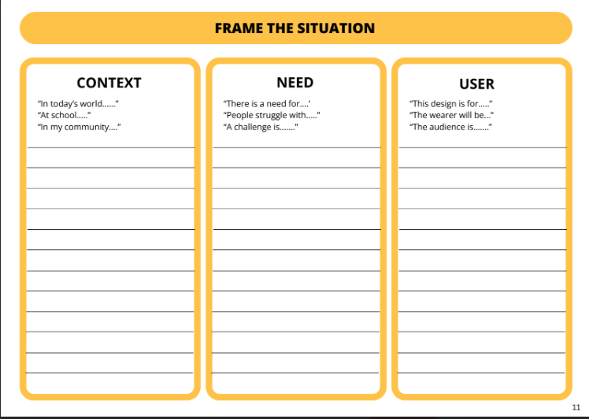
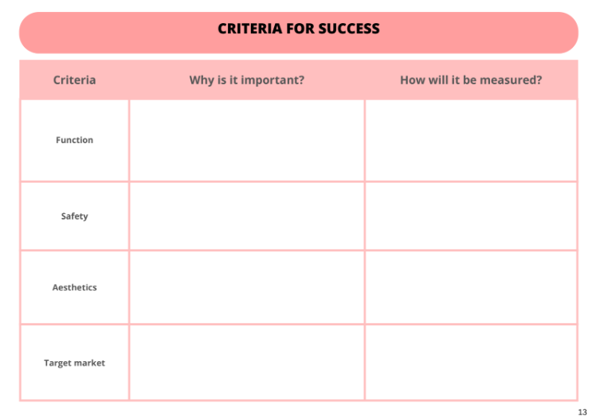
Save as evidence: situation, brief, criteria and constraints.
Activity 5Mood board and concept studio
Your goal
Curate a visual direction, generate distinct concepts and justify the strongest choice.
- Plan the mood board.
- Describe or draw at least three distinct concepts in the teacher-approved folio format.
- Use PMI and feedback to select a direction.
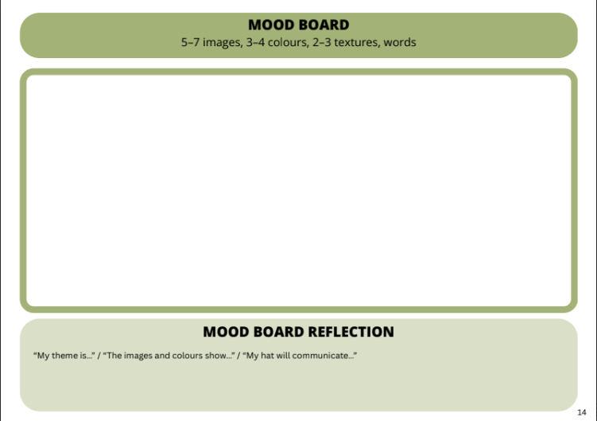
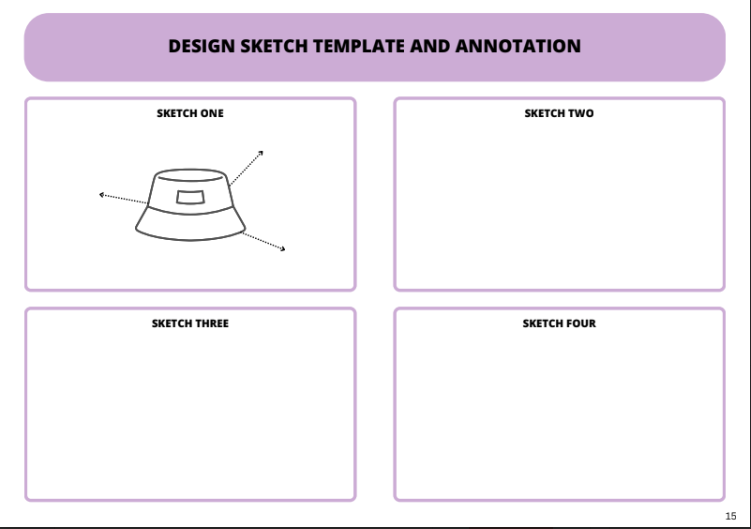
Save as evidence: mood-board direction, concept set and selection justification.
Activity 6Fibre and sustainability comparison
Your goal
Compare cotton and polyester without making unsupported claims.
- Explain fibre → yarn → fabric.
- Compare properties for the actual hat use.
- Record one responsible material action and one evidence limitation.
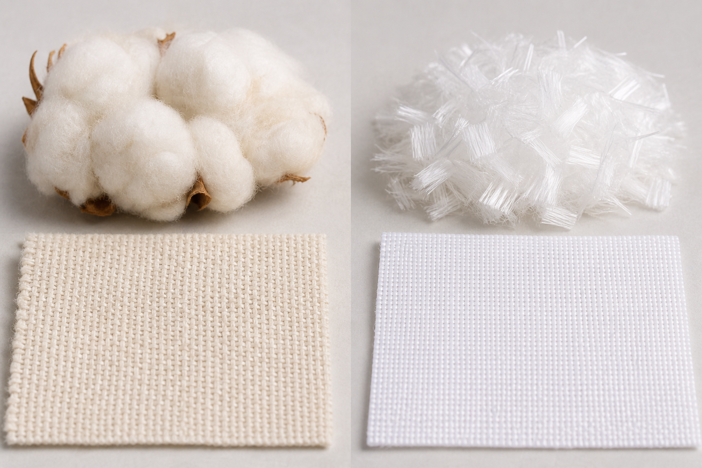
Save as evidence: process explanation, property comparison and qualified sustainability judgement.
Activity 7Decorative technique sample log
Your goal
Use supervised sample trials to select a technique that suits the fabric, user and message.
- Record the real materials and demonstrated steps.
- Evaluate each sample with observed evidence.
- Select a technique and name the next refinement.
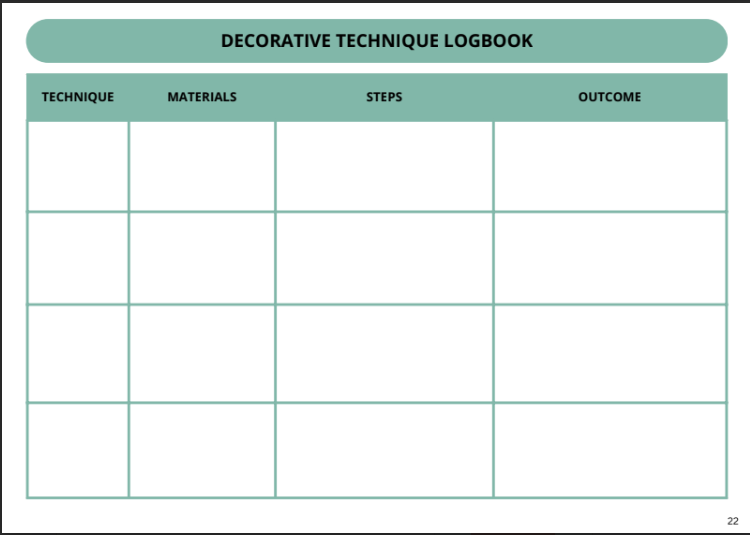
Save as evidence: honest sample log and evidence-based selection.
Activity 8Pattern and machine readiness
Your goal
Show that you can read the approved pattern and prepare for controlled machine work.
- Identify the symbols on the teacher-approved pattern.
- Write the layout, marking and cutting checks.
- Record real machine-practice evidence and teacher approval status.
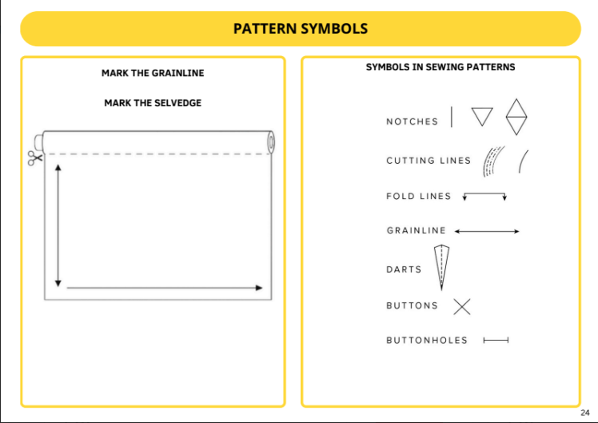
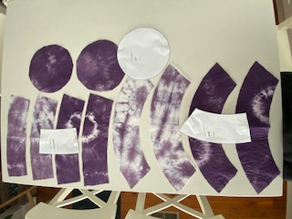
Save as evidence: pattern-reading checks and honest readiness record.
Activity 9Action plan and progress evidence
Your goal
Follow the approved sequence, manage quality and record real production evidence.
- Plan the next practical stages.
- Record progress after each stage.
- Describe one problem-solving cycle.
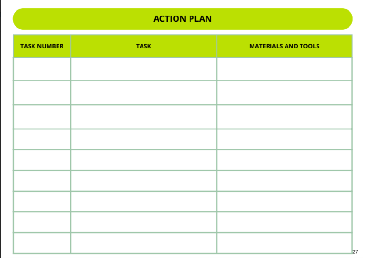
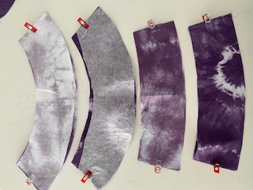
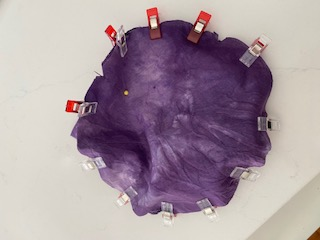
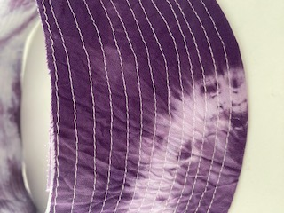
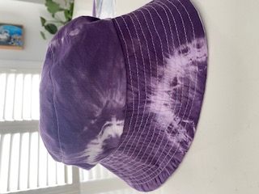
Teacher-source orientation images. Follow the demonstrated classroom sequence; these images do not set dimensions or seam allowances.
Save as evidence: plan, progress entries and one documented correction.
Activity 10Evaluation and designer statement
Your goal
Evaluate the real hat against criteria and communicate the design journey honestly.
- Test each criterion using available evidence.
- Record self/peer feedback and your response.
- Draft the designer statement and identify required product photographs.
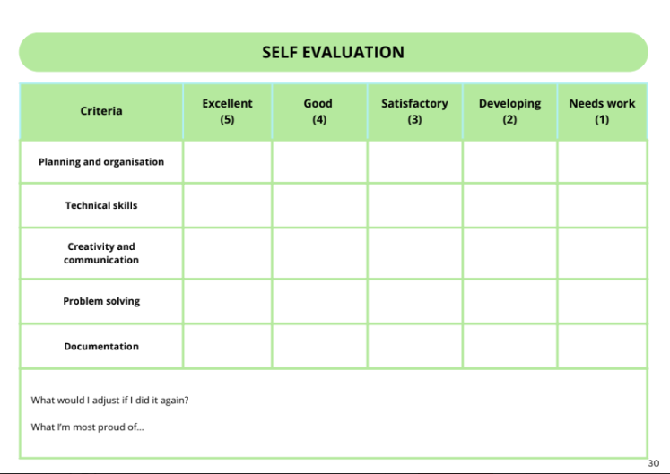
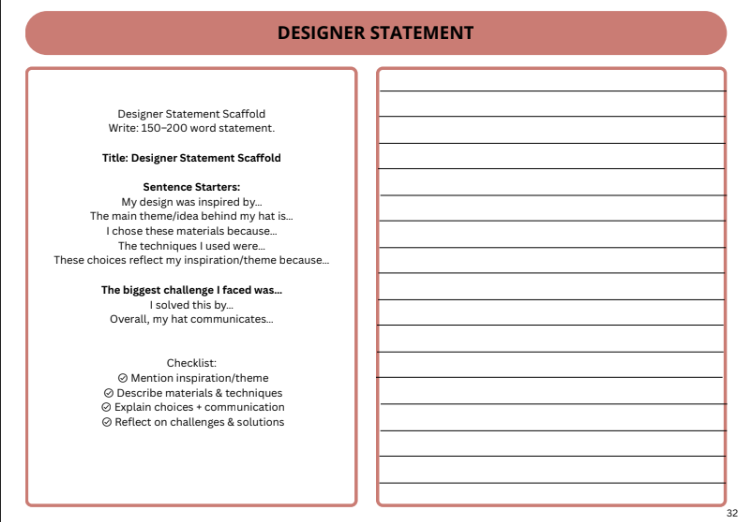
Save as evidence: evaluation, response to feedback, statement and photo plan.